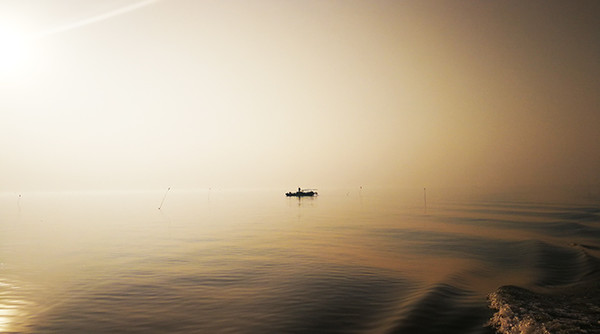
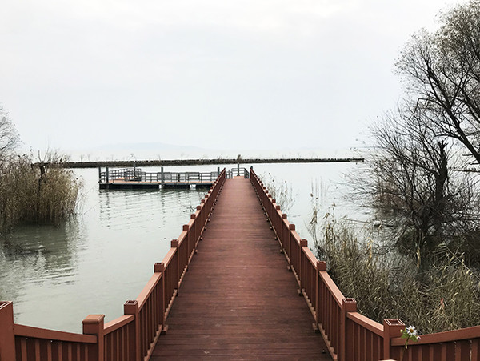
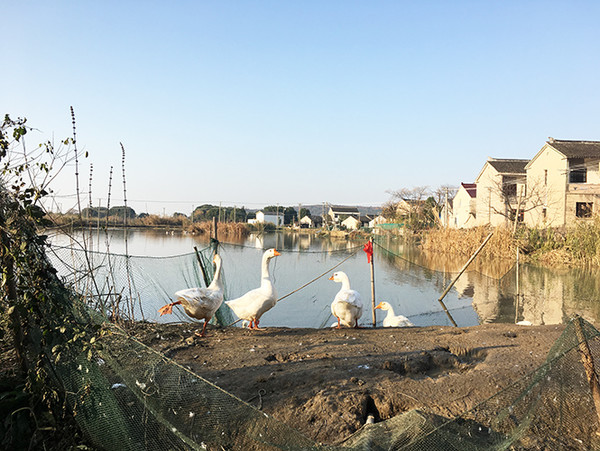

漫山岛在第二条路上，满眼都是天赋，却偏爱挥霍青山绿水，用自己的方式过小日子，即便强行拖它起来，也得不到结果。

要在苏州寻找野趣，最好的办法是出城向西，到太湖边的渔村看看。可如今，这个办法也不太能如愿。即便来到冲山半岛，见到太湖本尊，左右手边仍然是紧密的两层洋房，手工艺工厂，以及和农贸市场里一样，吆喝鱼虾生意的本地人。一般人到此也就死心了，不再强求精致的苏州展现别的风貌，但若固执，雇个船家，踏碧波白浪，驶向茫茫太湖里，便会来到漫山岛。 太湖五十余岛，人言七十二峰，但飘渺之下，多是些连名字都没有的土丘，不可能开发完全。漫山岛因此常年处于一个尴尬的地位，名义上是太湖第三大岛，距离陆地很近，实际没有通桥，没有路标，不问当地人，甚至都无法知道这个岛的存在。

登岛的浅滩本没有路，有人到来，便修了路。木栈道悬空于滩涂上，红漆饰面，不会腐朽，因此走起来平坦稳当。就是突如其来的大自然太过热情，两旁芦苇挤向栅栏，延伸到栈道中间，又尖又细的枝芽触及脚踝手背，让都市来的游客不太适应。

好在不适应很快就会过去，只需拐个弯的功夫，遮挡视线的灌木红衫自觉退下，露出一汪清潭，三分屋舍，半幅蓝天。湿地稻田，白鹭青丘，太湖鹅排队飞入布置好渔网的池塘，啄食岸边的绿叶。脚下的栈道变成田埂，踩上去松软，给人一种亲切感，想要跑起来，到远处深处去看看。只是四周不见打理田地的农户，也没有承包池塘的渔民，手机信号不好的时候，城里人未必找得准方向。
作者： leyton
喜欢用少量的旅行，配合奇怪的视角，以最实惠的方式制造胡思乱想。联合运营微信公众号：一人之家。小说《戏里佛》连载中。
专栏最热文章
夏木尼，小王子的玫瑰城市
暹粒油淋鱼
西安：旧长安的画皮
漫山岛
胡日尔镇的美术馆
专栏其他作者
袁云准
旅日青年国际政治研究学者，草食男青年一只，
偏爱东瀛文化之纤细，孤身远行，游学定居于此，目前于东京某大学潜心钻研政经外交；
学术研究事务繁杂多忙，但凡有闲，定背包出行转换心情。
徐冉
荷兰小伙儿，艺术大学毕业，小众文艺男一枚； 曾在亚洲背包旅行十五个月，现在在北京学习中文。
斑马疆湖
斑马小姐与斑马先生，一行两人；独立撰稿、摄影纪实，专注南疆旅游文化。